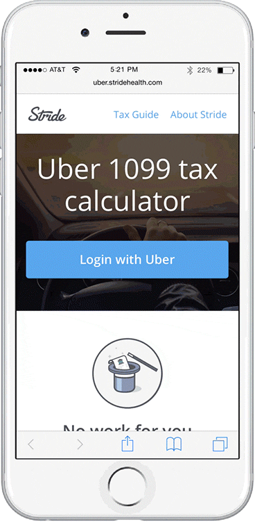
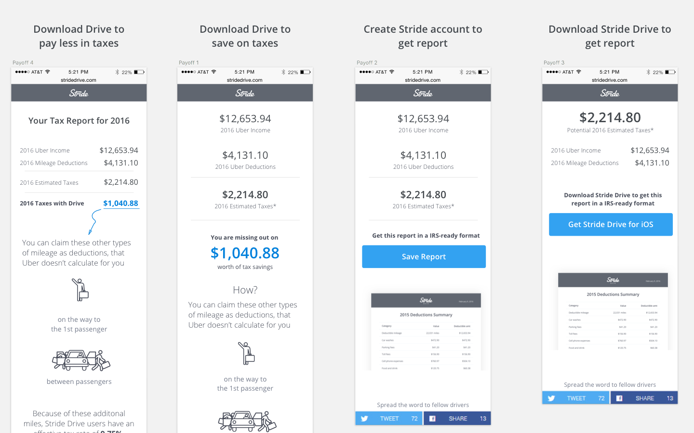
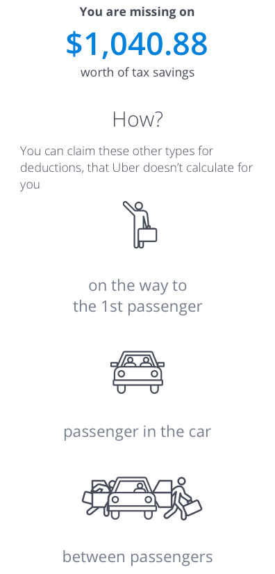
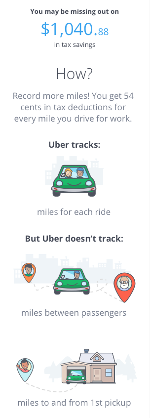
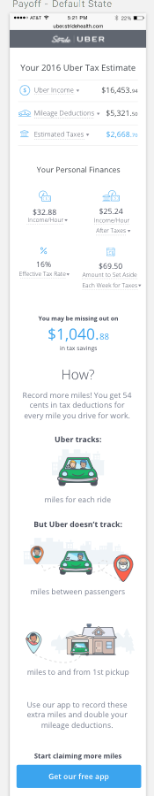
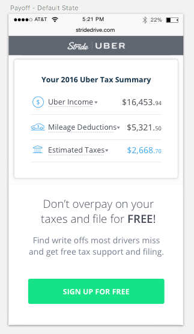

ROLE
I was the design lead. I worked with 1 visual designer, 1 PM and 4 engineers. I did user research, wireframing, prototyping, visual design, QA and implementation.
Outcomes
Final
Results
This was a completely brand new experience that paved the way for all future Stride partnerships. It was loved both by our users, is our highest converting growth product, and was beloved both by Uber drivers and the Uber product team.
50%
LANDING PAGE TO UBER AUTHS
35%
STRIDE APP DOWNLOAD
100,000
NEW USERS ACQUIRED
Process
I kicked off this project with need finding and user research. I used my findings to get buy in from management to shift the strategy of this product to become more utility focused rather than a pure lead-gen product experience.
I then led prototyping and interaction design for this project. Finally, I also worked with Engineering to ensure smooth implementation and launch.
I also worked with our marketing team on the copy and email messaging.
Pre-kickoff
Setting the context
As part of Uber’s newly released Tax API, Stride strived to come up with a solution to help Uber drivers (Stride’s biggest population of independent workers) with their taxes.
The management team was initially focused on leveraging this product experience primarily as a lead gen opportunity for our tax tracking app, Stride Drive.
How might we get Uber drivers to download Stride Drive?
Defining Success
My PM, Paul and I defined the two most important metrics we cared about for this project:
- Number of users who go through this new product experience
- Total number of Stride Drive sign-ups
User Research
We knew that taxes were a key pain point for Uber drivers. In order to tease out this true need further, I wanted to test multiple value props with drivers.
Round 1: Stride Sales Pitch Time!
We did a team brainstorm (PM, Head of Product, CEO and CTO) and generated the following value props to show drivers.
During the course of 2 days, I got into a total of 10 Uber rides and showed these to my driver to get their feedback.
None of these value props resonated with Drivers. Most of them were confused and found all of these to be to salesy. Getting an "instant bonus" or "saving on taxes" were not strong pain points.
Round 2: Utility based value props
During the previous round of testing, I spoke to the drivers to understand more about their tax needs.
The common theme I always heard was "I don't know what to do, and Uber won't help me". I used this to work on a Round 2 of value props to test with users.
Now we were onto something!
Drivers asked me me, "Is this a real product?" "Where can I get it?" "How much do I pay for it?"
Drivers repeatedly asked me for help on deciphering the numbers on their Uber app, and how to calculate taxes. Uber was not legally allowed to offer them any help, so they truly felt alone.
Prototyping and rapid iteration
One of the biggest challenges I faced in this project was aligning the leadership team around this new idea of moving the product away from a salesy/lead gen experience to one that could offer true value.
Building confidence
My PM, Paul worked on the projections to prove that it was possible for us to offer a free and valuable experience and also get the new member sign ups we wanted.
While Paul built out projections, I wanted to make sure that after going through our awesome free experience, Uber drivers will then proceed to sign up for Stride. I prototyped multiple product experiences with different CTAs for a Stride sign-up.
Which of these compels drivers to sign up with Stride?
We found that showing users their estimated tax liability, and amount of money they could pay less by using Stride was a powerful moment for users. It was compelling enough that 6 out of 8 drivers we spoke to said they'll download the app (the 2 drivers already had it!).
UX Flows
I then proceeded to map out what the flow of this new product experience will be like.
Whiteboarding user flows

Mapping out final flows

IA and visual design
We were dealing with hard to understand, but important information on this project. Users cared a lot about their taxes, and we wanted to convey information in the clearest way possible.
IA for the main report
I worked on multiple iterations on the main report to figure out the main way to convey the most vital information - total estimated taxes and total tax savings. We went with Option 5.
Visual icon design
One of the things we tested in our prototype round was the "Tax savings with Stride" amount. When we presented that information by itself, drivers were often skeptical. They felt that it was too good to be true. Surely you can't cut your tax bill in half?
In those rounds, I tried explaining the reasons behind the tax savings numbers and drivers learnt something new, and responded well to it.
BUT when we put that content in text form, most of them scrolled right past it. I designed the visual concepts for icons that were visually beautiful and conveyed how we would save users money on taxes.
Boring version
Visual version
Users were now reading through how Stride would save them money and were more convinced of the value prop.
Converting drivers to sign up
The final but most important step of the designs was to make sure that we were getting drivers to sign up.
One thing that was clear from user research was that drivers loved the free content that we were sharing with them. It helped establish trust in Stride, and it was valuable to them.
This made them more likely to want to sign up for Stride.
I made the design decision to include the CTA for download all the way below the tax savings and education. I believed that users always scroll, and will have gained enough trust and value to download Stride Drive.
This was a fiercely contested decision, as out leadership wanted the CTA to be "above the fold". Through explanation of the user research I built trust around the decision to keep the CTA below the value.
This also turned out to be the right decision! 3 months after the launch, a team experimented with moving the CTA above the fold, and found that the conversion rate dropped by 25%, and later reverted back to my original designs.
Low on page CTA = 35% downloads
Above fold CTA = 25% downloads
Results
Here are the results from the launch of this project.
Stride Drive Downloads
The Uber Tax Calculator is still the biggest acquisition source for the Stride Drive App till today. On an average off season week, we acquire 1000 new drivers from it.
This new product also helped us acquire close to 100,000 new Stride members till date.
Launch of Stride new Tax offering
This product was Stride's biggest growth lever during Tax Season 2017. It also helped launch Stride as more than a mileage tracker, but rather as a holistic tax offering.
The Uber team LOVED this new product experience, and signed a new partnership deal. Stride will be the primary tax offering that was promoted by Uber in 2017, beating out TurboTax, H&R Block and Credit Karma Tax.
Insights and Recommendations
This product experience has been the most rewarding to build and watch as it grew. It helped us launch a brand new offering, and opened up a partnership opportunity for us.
This project also laid the foundations for other partnership products Stride has developed in the past year.
It also taught us to always provide value to our users, and build trust and a long term relationship.